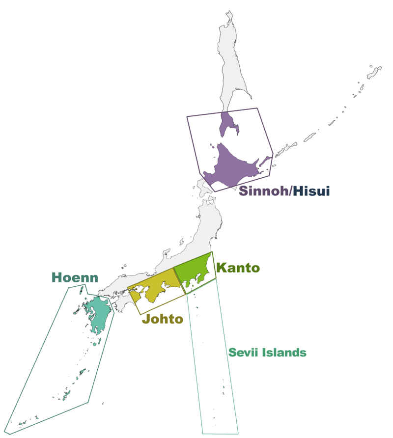
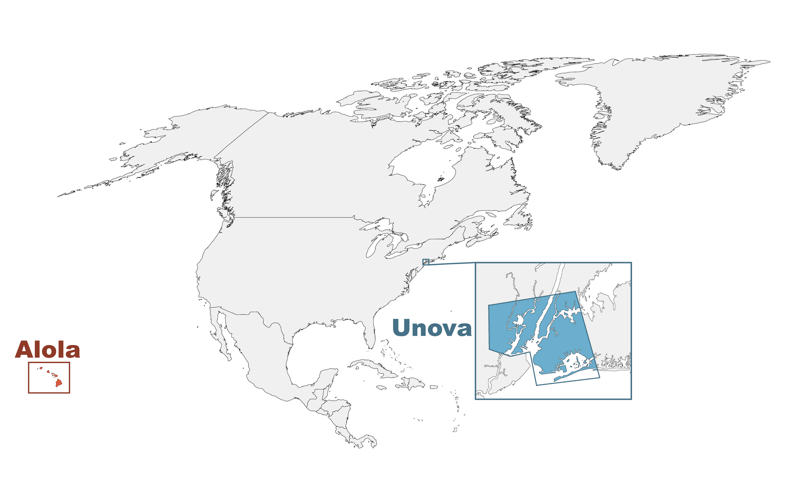

Auf dieser Webseite findest du interaktive Karten zu drei verschiedenen Pokémon-Regionen: Kanto, Johto und Einall. Jede dieser Karten stellt die Welt so dar, wie sie der Spieler im jeweiligen Spiel erlebt. Das bedeutet, dass nur die Orte sichtbar sind, die auch tatsächlich während des Spielverlaufs betreten oder gesehen werden können. Die Karten bilden die verschiedenen Laufwege des Spielers ab und zeigen die vielfältigen Landschaften, Städte und Routen, die die Pokémon-Welt so einzigartig machen.
Kanto - Eine Hommage an Japan
Die Region Kanto in den ersten Pokémon-Spielen ist stark von der gleichnamigen Kanto-Ebene in Japan inspiriert, die die Hauptstadt Tokio und ihre Umgebung umfasst. Die Architektur, das Stadtbild und die Kultur, die in der Kanto-Region von Pokémon dargestellt werden, spiegeln Elemente aus dieser modernen und dynamischen Gegend wider. Sehenswürdigkeiten wie die Silph Co. und die Pokémon-Liga erinnern an das urbane Leben in Tokio, während die ländlicheren Gegenden an die Natur Japans angelehnt sind. Kanto ist damit ein perfektes Beispiel dafür, wie die reale Welt kreativ in das Spiel integriert wurde.
Johto - Ein Blick auf die japanische Geschichte
Die Region Johto die in Pokémon Gold und Silber eingeführt wurde, weist eine starke Inspiration durch die traditionelle japanische Kultur auf. Die Architektur der Städte in Johto, wie die Azalea City und Ecruteak City, erinnert an alte japanische Bauwerke, die von Shinto-Schreinen und klassischen Tempeln beeinflusst sind. Ecruteak City zum Beispiel könnte von historischen Städten wie Kyoto oder Nara inspiriert sein, die für ihre Tempel, Schreine und historische Bedeutung bekannt sind. Johto bringt damit die tief verwurzelte japanische Spiritualität und Geschichte in die Pokémon-Welt.
Einall - Eine Reise nach Amerika
Die Region Einall (auch bekannt als Unova) aus Pokémon Schwarz und Weiß ist einzigartig, da sie hauptsächlich von den Vereinigten Staaten inspiriert wurde. Die Städte und Landschaften in Einall reflektieren Elemente aus Nordamerika – von den modernen Wolkenkratzern von Castelia City, die an New York erinnern, bis hin zu den ländlichen Gebieten, die die Weiten der amerikanischen Prärien nachbilden. Die Castelia City erinnert durch ihre Architektur an Städte wie New York City, während der Floccesy Ranch Bereich ein klares Bild der amerikanischen Weidenlandschaften vermittelt. Einall bringt somit die westliche Kultur in die Pokémon-Welt und bildet einen markanten Unterschied zu den anderen, eher japanisch inspirierten Regionen.
 Zurück zur Startseite